Tópico 2: Meios de Transporte; Família; Rotina e Hábitos – Em Casa
1.1 What time is the next bus?
Após algum tempo em Chicago, Rosa já está familiarizada com os arredores de sua casa e da Columbus College of Chicago e consegue chegar a diversos lugares com facilidade andando a pé. Ela decide ir à parte central da cidade e, para isso, precisa utilizar um meio de transporte para se deslocar até lá. Acompanhe no diálogo a seguir o que acontece com Rosa:
Rosa: Excuse me.
Person: Yes?
Rosa: What’s the bus to Michigan Boulevard?
Person: It’s Route 3.
Rosa: When is the next bus?
Person: At 9:05.
Rosa: Oh, at any moment now, then. Thank you.
Rosa pega um ônibus para visitar o distrito histórico ao longo da Michigan Boulevard. Veja no conteúdo a seguir como se denominam outros meios de transporte em língua inglesa.
1.2 Means of transportation
Em grandes cidades como Chicago, é comum haver mais de um meio de transporte público. Veja a seguir o nome de alguns means of transportation.
 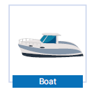
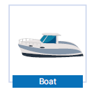
1.3 Questions Words
Ao longo das aulas você estudou algumas question words. No diálogo apresentado, Rosa utiliza what’s para perguntar qual é o ônibus que poderia levá-la ao Michigan Boulevard. Veja:
Quando você precisar saber qual é o nome ou a rota do meio de transporte, ou ainda o destino para onde você deseja ir, utilize what. Veja os exemplos:
When também foi utilizada por Rosa para perguntar quando o próximo ônibus passaria:
Com essas questions words você já consegue solicitar algumas informações básicas relativas aos meios de transporte.
Essas perguntas geralmente são feitas quando já estamos na bus stop. Mas, e se você quiser saber onde fica o ponto de ônibus? Neste caso, seria utilizado where para perguntar, veja:
Você provavelmente ouviria a resposta relacionada a algum ponto de referência que serão apresentados no próximo tópico.
1.4 In the Street
Eventualmente utilizamos pontos de referência para ajudar a encontrar algum lugar, veja a seguir alguns deles:
| Item | Português |
|---|---|
| sidewalk (AmE)/ pavement (BrE) | calçada |
| traffic lights | semáforo |
| sign | sinal, placa |
| crossing lane | faixa de pedestres |
| bike lane | faixa de ciclistas |
| roundabout | rotatória |
| crossroads | cruzamento |
| bridge | ponte |
Outra situação que poderá ser vivenciada por alguém que precisa se deslocar utilizando um meio de transporte é perguntar o preço dos tickets.
Esse é o conteúdo que será abordado no próximo tópico.
1.5 How much
Antes de pegar um meio de transporte pago, normalmente tentamos descobrir o valor da passagem e as formas de pagamento. Para isso, podemos utilizar a mesma pergunta que usamos para saber o preço de qualquer coisa - a estrutura utilizada sempre inicia com How much.
Veja o diálogo entre Rosa e o motorista do ônibus, quando ela pede informação sobre o preço da passagem:
Rosa: How much is the ticket?
Driver: It’s $2.25 in cash.
Rosa: Here you are.
Acompanhe na tabela outros exemplos do uso de How much no singular (ao referir-se a um ticket) e no plural (ao referir-se a mais de um ticket).
| Singular | Plural |
|---|---|
| How much is the subway ticket? (Quanto é a passagem do metrô?) |
How much are two Chicago Cards? (Quanto custam dois Chicago Cards?) |
| How much is the ticket to New York? (Quanto é a passagem para New York?) |
How much are the round-trip tickets? (Quanto custam as passagens de ida e volta?) |
Ao responder uma pergunta com How much..? , os números podem ser ditos de diferentes formas. Acompanhe como ficaria para o valor de $2,50:
| Two fifty | Two dollars fifty cents | It’s two fifty |
|---|
Ao saber o valor do ticket você poderá efetuar o pagamento. As opções mais comuns são:
| credit card (cartão de crédito) | cash (dinheiro (em espécie)) |
|---|---|
| bills (notas) | coins (moedas) |
No caso de você pagar por algo in cash você pode receber change. Nos países de língua inglesa, as currencies (moedas) utilizadas normalmente são dollar (the USA and Canada) ou pound (libra) (England), e o nome das frações são cents (centavo) e pence (centavo), respectivamente.
1.6 Colors
Em diversos lugares as linhas de ônibus, trem e metrô são identificados por cores. Veja alguns exemplos:
Veja a seguir algumas cores utilizadas com maior frequência no cotidiano:
 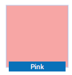
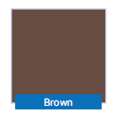
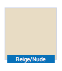
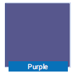
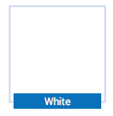
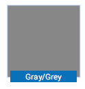
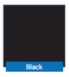
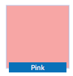
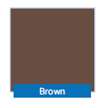
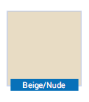
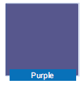
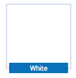
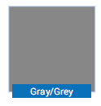
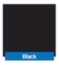
As cores podem variar de intensidade e ser caracterizadas como light (clara) ou dark (escuro). Em inglês, quando você quer defini-las assim, basta utilizar estes adjetivos antes da cor.
Uma cor, por sua vez, também é um adjetivo, portanto deve vir antes do substantivo. Observe:
| English | Português |
|---|---|
| Dube’s black bicycle. | A bicicleta preta de Dube |
| The dark blue pub | O bar azul-escuro. |
| Christine’s green bag | A bolsa verde de Christine. |
| The yellow bus stop sign. | A placa amarela da parada de ônibus |
Quando se quer saber qual a cor de algo, utilizamos What color combinada com o verbo To be. Acompanhe outros exemplos:
| Singular | ||
|---|---|---|
| What color is | Dube’s bike? | Que cor é a bicicleta do Dube? |
| the subway line to Chinatown? | Que cor é a linha de metrô para Chinatown? | |
| Plural | ||
|---|---|---|
| What color are | the train routes to the south? | Quais são as cores para as rotas de trem para o sul? |
| the buses in Chicago? | Quais cores são os ônibus em Chicago? | |
Identificar as cores de algumas linhas de meios de transporte o auxiliará a deslocar-se em qualquer lugar em que você esteja.
É comum que o transporte público tenha um horário de partida e chegada previsto. Por isso, saber a hora exata em que eles vão partir é importante. Como perguntar as horas será o assunto do próximo tópico.
1.7 Asking and telling the time
Para perguntar sobre a hora em que alguma coisa vai acontecer, utiliza-se a estrutura What time is the, veja o exemplo:
Mas quando queremos apenas saber as horas, a pergunta é:
Essas perguntas exigem respostas diferentes. Para a primeira, usa-se a preposição at, designando que algo é às "alguma hora". Para responder a segunda, a oração é iniciada com it’s, expressando que são "determinada hora".
Para dizer que são 6h47min, dizemos six forty-seven. Quando se trata da hora “em ponto”, ou seja, sem minutos passados ou faltando, acrescentamos a expressão o’clock:
Em inglês não se costuma utilizar o formato de 24 horas (por exemplo, 17:00 para as cinco horas da tarde) e sim o de 12, acrescentando-se as iniciais “AM” e “PM” conforme o horário seja antes ou após o meio-dia, respectivamente.
Para referir-se ao meio-dia utilizamos noon ou midday e, para meia-noite, midnight. Veja na ilustração de um relógio a seguir como se informa os minutos em inglês:
Quando lidamos com as horas em inglês, precisamos atentar para as preposições to e past (ou after).
Quando dizemos que passaram “X” minutos da hora em questão, utilizamos past (ou after). Quando dizemos que faltam “X” minutos para a próxima hora, utilizamos to.
É fácil saber quando é um ou outro, pois assim como em português, os 30 primeiros minutos são contados como passados da hora, enquanto os últimos 30 minutos são contados como restantes para a próxima hora. Veja os exemplos:
| Examples | |
|---|---|
| 3:20 | It’s twenty past three |
| 3:30 | It’s half past three |
| 3:40 | It’s twenty to four |
| 3:55 | It’s five to four |
Se dividirmos uma hora ao meio, teremos duas metades de 30 minutos cada. Assim, para dizer “São dez e meia”, utilizamos a palavra half (metade):
Seguindo o mesmo princípio, se dividirmos meia hora, teremos 15 minutos. Assim, para dizer “São sete e quinze”, ou seja, que passaram quinze minutos (um quarto de hora) das sete utilizamos a fração a quarter (um quarto):
Quando estiverem faltando 15 minutos para uma determinada hora, também utiliza-se a quarter. Por exemplo:
Com este conteúdo é possível que você informe ou compreenda informações relacionadas à hora que algo acontece.
1.8 Prepositions of time
Caso você queira dizer de que horas até que horas algo acontece, ou seja, mencionar o início e o fim do período de tempo, você utilizaria as preposições from e to da seguinte forma:
Se o que você quer saber diz respeito a daqui a quanto tempo algo irá ocorrer a preposição a ser utilizada é in. Veja:
As preposições in, at e on também são empregadas para indicar lugares. Esse é o conteúdo apresentado a seguir.
1.9 Prepositions of place - means of transportation
Em se tratando de means of transportation, as preposições de lugar são usadas de uma forma um pouco mais específica. Veja a seguir as preposições adequadas de acordo com cada meio de transporte.
She is on the bus.
Para falar que Rosa está no ônibus utiliza-se on porque a ideia é associada ao fato de ser preciso step up to (subir o degrau), atingindo assim um lugar elevado. De modo geral, então, pode-se dizer que com meios de transporte que carregam muitas pessoas - bus, train, subway, cable car, airplane, ship - utiliza-se on. A mesma ideia se aplica a outros meios de transporte em que você também precisa “subir” para poder utilizá-lo. Observe como o on está sendo aplicado nas frases a seguir.
Se você entra em um barco, bote ou carro, a preposição correta é in. Nesta situação tem-se uma ideia de descer ou estar envolvido por um lugar.
1.10 Linking Sounds
Quando se está aprendendo uma língua estrangeira, é comum pensarmos que os falantes nativos falam muito rápido, dando a impressão de que transformam duas ou mais palavras em uma só. Isso acontece porque, assim como nós, em português, eles fazem ligações entre os sons das palavras. Quer dizer, “juntam” o som da consoante final de uma palavra com o som da vogal da palavra seguinte. Observe, nas frases a seguir, as ligações realizadas na fala:
Veja outros exemplos de linking sounds:
| Can I have a soda? | Get away! |
|---|---|
| Turn off the lights, please. | My dog is lovely. |
A partir de agora, procure sempre estar atento a essas ligações. Quanto mais você identificá-las, mais fácil será produzi-las oralmente. Desta forma, o speaking se tornará cada vez mais natural.
1.11 Little details
Punctuality
In the United States punctuality is very important. Being late is considered rude or impolite. For example, if your class starts at 8AM and you arrive at 8:05, you are late, and it is not good. A very common expression is sharp. People say “The class is at 10 o’clock sharp”, meaning that the class starts exactly at 10 o’clock. Even at social events punctuality is necessary. So, always be on time!
Change
Another important aspect about the American culture is related to money. You pay for the exact amount of money. For example, if a bag costs $25.07, you pay $25.07. Unless the cashier tells you something like “I’ll make it $25” or “I’ll leave it for $25”, you do not ask for a discount or price lowering. So, make sure you have 1 cent, 5 cents, 10 cents, all sorts of coins with you, they help at these moments.
1.12 Material Complementar - idioms with colors
Nesta mídia você terá contato com algumas expressões que fazem uso de cores para descrever alguma situação ou sentimento. Em inglês, as cores expressam muito mais do que a cor de algum objeto. Elas também podem sugerir estados de espírito ou situações inusitadas. Conheça alguns desses idioms:
To tell a white lie: contar uma “mentirinha”/uma mentira branca
To be blue: estar deprimido, triste
To be in the red: estar no vermelho, sem dinheiro
To be green with envy: ficar roxo de inveja
To paint a black picture of something/somebody: fazer comentários negativos de algo/alguém
To be in the pink: estar em boa saúde
1.13 Material Complementar - AM or PM?
Da meia-noite até as 11h59 você diz AM.
Ou seja, meia-noite é 12AM e três horas da manhã são 3AM.
A partir do meio dia, você diz PM.
Ou seja, meio-dia é 12PM e três horas da tarde são 3PM.
Se por acaso você se confundir, é só pensar em AM como antes do meio-dia e PM como pós meio-dia.
1.14 Material Complementar - on Time
Se você quer pedir que alguém chegue pontualmente, você pode utilizar as expressões on time (na hora) e sharp (em ponto).
Por exemplo:
Se você quer dizer que chegou alguns minutos antes do horário marcado, você pode usar a expressão in time (em tempo):
Quando queremos dizer que um estabelecimento comercial funciona 24h/dia, 7 dias/semana, a expressão correspondente em inglês é 24/7:
Você também pode usar esta expressão para dizer que trabalha ou estuda muito:
Nesse caso, é uma forma de exagerar, não significa que você realmente trabalha ou estuda vinte e quatro horas por dia.
Uma expressão semelhante a 24/7 é round the clock, que designa alguma coisa que acontece dia e noite:
1.15 Resumo e glossário
Glossary
Bicycle, bike: bicicleta
Motorcycle, motorbike: motocicleta
Car: carro
Bus: ônibus
Taxi: táxi
Train: trem
Subway(AmE)/underground,tube (BrE): metrô
Tram, street car: bonde
Airplane: avião
Boat: barco
Ship: navio
Ferry boat: balsa
Credit card: cartão de crédito
Cash: dinheiro (em espécie)
Bills: notas
Coins: moedas
In cash: em dinheiro
Change: troco
Currencies: moeda
Pound: libra
Impolite: sem educação
Meaning: querendo dizer
To start: iniciar
Even at: mesmo em
Unless: a menos que
I’ll make it for…: faço por..
I’ll leave it for..: deixo por..
To ask for: pedir
Price lowering: redução e
To make sure: certificar-se